本決策中樞專為向公司高階主管匯報設計，深度整合《中山大學微電網建置統包工程需求說明書》全 16 份正式招標文件與內部可行性評估報告：技術規格我方具備完全交付能力（3MWh C5M 儲能、1200kW PCS Seamless 瞬切、國研 584kW 半導體不斷電）；惟契約條款存在三大致命硬傷（損害賠償無上限、無物價調整、預算前後矛盾）與極端緊繃工期（40天細設扣減、116/6/30硬工期）。經綜合權衡，提出「選項 B：有條件投標」作為核心決策建言，明訂投標前 5 大釋疑談判底線與風控閉環。
西子灣台電末端天然屏障、全校十大饋線與 GCB6 供電區、排球場儲能場址、統包工作權責邊界與最有利標 7 大評選維度（100分）。
3MWh C5M 儲能櫃五層縱向防護、1200kW PCS、國研+海工光電改建與風雨球場擴充、MGC 毫秒級 OT 安全邊界、雲地協同 EMS 與 ABB 電驛避雷優化。
併網超約抑制與尖離峰轉移、孤島保供 4h 與防災中心 48h、Seamless 電源瞬切波形、5大商業模式驗證、116/6/30 里程碑與 5 年全責保固 SLA。
向主管匯報四大面向風險清單：損害賠償無上限、無物價調整、消防新制審查、工期不可壓縮外部關鍵路徑、尾款綁台電補助撥付與現金流缺口。
A/B/C 三選項決策矩陣（建議採選項 B 有條件投標）、5 大前置門檻檢核表、往上向上董事會匯報 × 往下執行責任矩陣、5 大必提書面釋疑底線。
地處西子灣為台電饋線末端，一旦饋線事故再加柴山天然屏障阻隔，校園即成孤島。中山大學獲選台電「大學節能及電力韌性推動計畫」南部示範代表，總預算 9,200 萬元含稅統包建置。
| 指標類別 | 現況量化數據 | 微電網工程意涵 |
|---|---|---|
| 校園規模 | 校地 73.4 公頃 / 建物 35 處 / 樓地板 33.7 萬 m² | 用電量體龐大，具備多棟建築負載調度空間 |
| 重點用電 | 醫學院、半導體學院、國際金融學院、工學院 | 實驗負載極度敏感，停電將造成不可逆數據毀損 |
| 經費性質 | 預算 9,200 萬元（含稅全包，台電補助案） | 含建築師、技師各項法定簽證、審查規費與職安衛 |
| 地理約束 | 西子灣台電末端，單一高壓進線無互轉饋線 | 天然微電網孤島示範點，獲台電選定為南部唯一示範 |
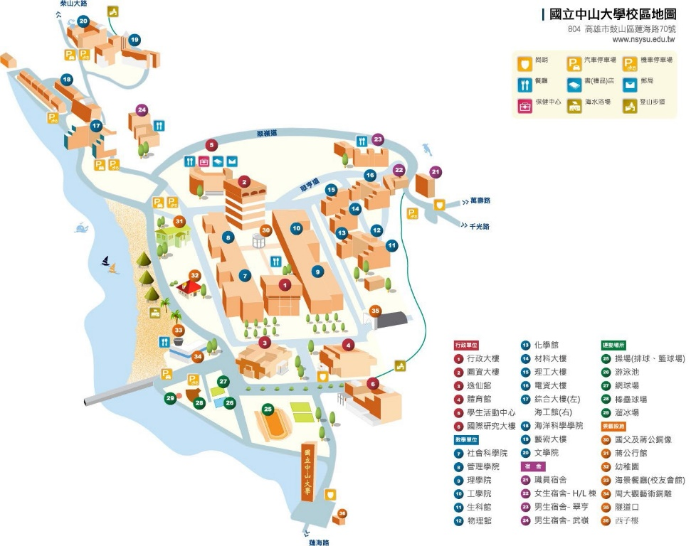
全校建置有十大饋線迴路。本案微電網選定 GCB6 饋線，主要供電予 A水池、社科院、管理學院與工學院半導體實驗核心——國研大樓（尖峰負載 584 kW）。
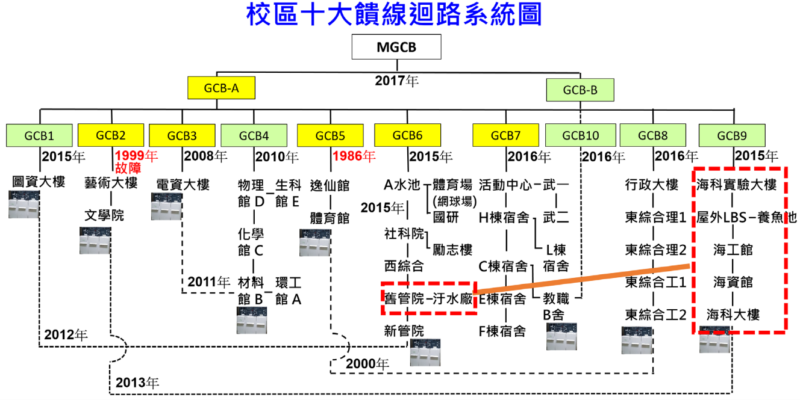
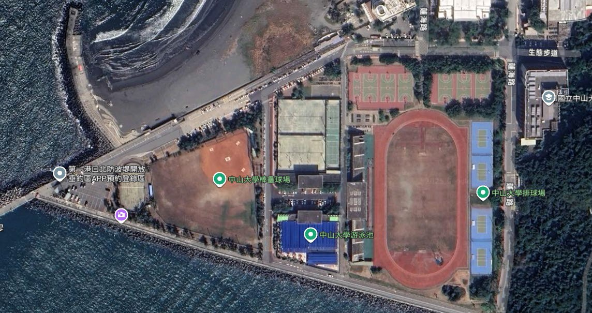
| GCB6 饋線建築物 | 負載性質與敏感度 | 尖峰負載值 (kW) | 離峰負載估算 (kW) | 孤島調度優先權 |
|---|---|---|---|---|
| 國研大樓（國際研究大樓） | 工學院半導體精密晶圓製程、關鍵實驗主機 | 584 kW | 約 230 kW (≤40%) | 第一優先保供（絕對不斷電） |
| 管理學院大樓 | 行政教學、電腦教室、空調與照明負載 | 約 320 kW | 約 120 kW | 次要負載（孤島依SOC分級卸載） |
| 社會科學院大樓 | 研究室、課堂教室、一般辦公用電 | 約 260 kW | 約 90 kW | 次要負載（孤島依SOC分級卸載） |
| A 水池抽水加壓站 | 校區民生給水與景觀抽水系統 | 約 80 kW | 約 30 kW | 可控負載（避開尖峰抽水） |
儲能系統設置於國研大樓旁排球場側空地，距電氣室高壓側併接點約 200 米，與 GCB6 饋線及微電網調度光電屬同迴路，具備最佳傳輸能效。
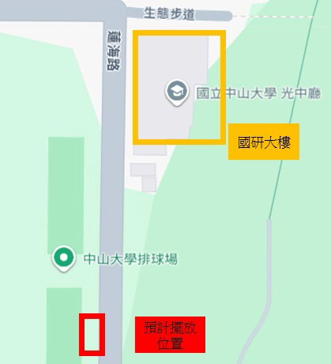
| 工程現勘限制項目 | 現場量測 / 規範要求 | 工程應對與設計防護策略 |
|---|---|---|
| 基礎可用尺寸 | 約 13.2m × 5.8m × 5.1m × 7.2m | 模組化緊湊型儲能櫃佈局，精確計算安全防護間距 |
| 行人通行限制 | 必須保留至少 2 米行人通道 | 預留圍籬緩衝區，確保師生往返排球場動線安全 |
| 高壓併接距離 | 距國研大樓電氣室高壓側約 200 米 | 沿既有管溝或開挖鋪設 24kV 級特高壓遮蔽電纜，抑制壓降 |
| 嚴苛鹽霧氣候 | 臨西子灣海堤第一排，高溫高濕高鹽 | 櫃體全面要求 C5-M 防腐塗裝、戶外 IP65 防水防塵 |
| 風災防護等級 | 西子灣正面迎擊夏季颱風暴潮 | 基礎座採高強度 RC 筏基，錨定強度達 17 級強陣風標準 |
本工程採設計與施工統包模式，範圍涵蓋細部設計、設備採購、土木機電施工、DREAMS台電介接至驗收後 5 年全責保固，廠商需負擔全部簽證與法規責任。
| 統包工作分項 | 工作內容細目 | 法定簽證 / 合規交付項目 | 權責歸屬 |
|---|---|---|---|
| 1. 規劃與細部設計 | 細部設計、數量計算、施工詳圖、材料規範 | 電機、土木、結構技師、建築師簽證，消防圖審 | 統包廠商全責 |
| 2. 設備採購供應 | 3MWh儲能櫃、1200kW PCS、光電、電驛、EMS | VPC認證證書、非中國製原產地證明、出廠試驗報告 | 統包廠商全責 |
| 3. 土木機電施工 | 基礎土建、200m電纜管溝、設備吊裝、細水霧消防 | 雜項使用執照、消防竣工查驗、職安衛計畫書 | 統包廠商全責 |
| 4. 全校防護優化 | 全校保護協調計算、ABB電驛5台、避雷器與SPD | 保護協調設計報告書、接地電阻量測合格證明 | 統包廠商全責 |
| 5. 保固與維運 | 驗收合格起 5 年全責維護（含耗材/零組件/人力） | 24h窗口、24h到場、72h完修SLA、滿1年節能報告 | 5年全責保固 |
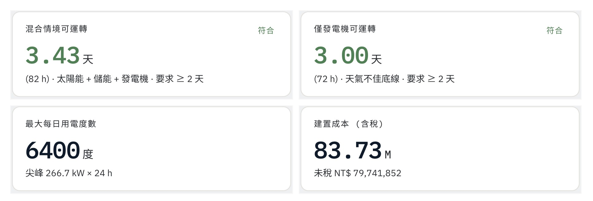
評選委員會由 7 位委員組成（專家學者4人+學校委員3人），採最有利標序位法，及格門檻 75 分。服務建議書上限 60 頁，簡報 15 分鐘、統問統答 10 分鐘。
| 項次 | 評選項目 | 評選審查核心重點 | 配分權重 |
|---|---|---|---|
| 一 | 公司規模、履約能力及實績 | 公司概況、財務狀況、類似工程實績、主要工作人員證照（計畫主持人、建築師、電機技師、土木/結構技師、消防設備師等）。 | 15 % |
| 二 | 規劃設計功能說明、執行進度規劃 | 【最高分項目】微電網連接風雨球場介面規劃、主要設備設計理念、現況環境了解、標的完成後使用維護與全生命週期成本、進度甘特圖。 | 25 % |
| 三 | 施工技術能力、設備型號、品質與保固 | 施工技術、主要材料設備廠牌規格表、品質穩定度、5年保固年限、緊急搶修SLA、設備零件供應鏈、每年維運費用估算。 | 10 % |
| 四 | 微電網運轉管理、節能、教學運維 | 併網/孤島調度邏輯、自主運轉4h以上、通訊監控設計、FAT/SAT測試驗證計畫、EMS整合既有系統擴充空間、節能效益分析、教學規劃。 | 10 % |
| 五 | 價格合理性及完整性 | 標單項目價格成本分析之正確性、合理性、報價競爭力與預算編列完整度（總預算 9,200 萬元）。 | 20 % |
| 六 | 創意與企業社會責任 (CSR) | 工程創意方案、綠能減碳附加價值、廠商推動企業社會責任（CSR/ESG）實績與承諾。 | 10 % |
| 七 | 簡報與答詢 | 簡報專業性、對校方主要痛點與問題之認知、現場答詢邏輯、應對處置妥適度（統問統答10分鐘）。 | 10 % |
整合「創能（光電）、儲能（BESS）、控能（PCS/MGC/EMS）、耗能（國研實驗室/EV）與備能（柴發）」，以國研大樓高壓電氣室為併接樞紐，實現高度自給自足與電壓源支撐。
| 系統設備項目 | 現有規格 | 本案建置後規格 | 調度功能定位 |
|---|---|---|---|
| 儲能系統 (BESS) | 無 | 3 MWh 或以上 | 削峰填谷、孤島供電、需量反應 |
| 功率調節器 (PCS) | 無 | 1,200 kW 或以上 | 電壓源/電流源 Seamless 切換 |
| 國研大樓自用光電 | 30 kWp (規劃拆除) | 118 kWp (新設) | 自願性高效能 VPC 模組自發自用 |
| 海工停車場自用光電 | 172.38 kWp (拆除) | 295 kWp (新設) | 擴建高發電容量自用微網綠電 |
| 國研大樓躉售光電 | 51.92 kWp (既有) | 51.92 kWp (保留) | 保留後續併入微電網調度彈性 |
| 柴油發電機組 | 400 kW (既有) | 400 kW (增設併聯盤) | SOC<30% 輔助供電，長時孤島備援 |
| 電動車充電樁 | 無 | 6 座 (一般充電樁) | 光電綠電優先充，支援校內電巴 |
| 風雨球場光電 | 規劃新建 | 1,475 ~ 2,000 kWp | 未來併入國研大樓微網擴充調度 |
MGC 定位為 OT 安全邊界節點，獨立執行毫秒至秒級即時功率控制，即便上層雲端中斷，微網孤島依然自主維持穩定頻率與電壓。
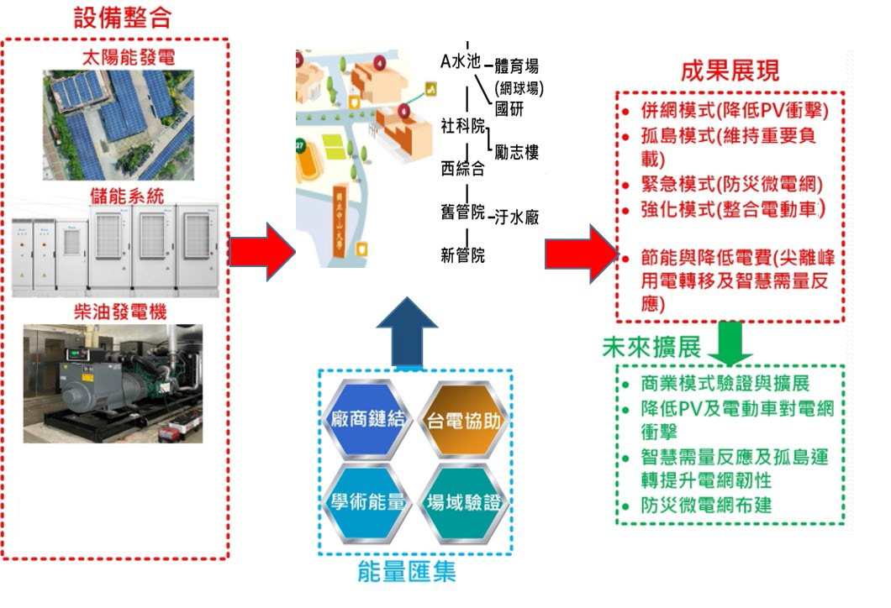
3MWh 儲能櫃採用耐強風抗震結構，具備 C5M 最高等級耐鹽蝕與 IP65 防護，並通過 UL9540A 燃燒測試與標準檢驗局儲能 VPC 自願性產品驗證。
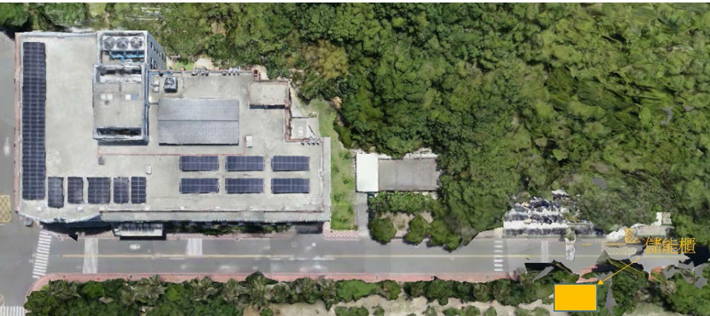
| 縱向安全防護層級 | 偵測與保護機制 | 連動處置措施 |
|---|---|---|
| 第 1 層（電芯級） | 電芯即時毫秒級電壓與溫度偵測 | 前置預防熱失控，主動平衡充電 |
| 第 2 層（模組級） | BMS 煙霧、可燃氣體雙備援感測 | 觸發告警，隔離異常串聯電池組 |
| 第 3 層（櫃體級） | 雙層鋼板＋防火岩棉三層結構（防火 1 小時） | 主動排風系統排出有毒氣體，防止爆壓 |
| 第 4 層（系統級） | 各櫃獨立氣體滅火＋內建撒水管路 | 通過 UL9540A 燃燒蔓延驗證，自動抑燃 |
| 第 5 層（場域級） | 儲能場域細水霧消防系統 ＋ EPO 連動 | 手動/自動觸發 EPO 緊急斷電，全域細水霧冷卻 |
電芯與模組： UL 1973, IEC 62619, CNS 62619, UL 9540A, UN 38.3, IEC 60730-1
電池櫃體： UL 9540A, IEC 60529, EN 61000-6-2/4, IP55 / UL 50E Type 3R
消防合規： 內政部消防署「提升儲能系統消防安全管理指引」火災風險評估。
1,200kW PCS 具備電網自主響應與電壓源/電流源毫秒級切換；微電網控制器 MGC 作為 OT 安全防護邊界，實施控制指令白名單，確保孤島絕對獨立。
| 設備名稱 | 關鍵技術規範要求 | 系統控制核心職責 |
|---|---|---|
| 1,200kW PCS 功率調節器 | 容量 ≥1200kW、外殼 C5M 防蝕、IP65、UL1741SB、IEEE 1547 | 電網電壓自主調控響應、無縫雙模式切換（電壓源/電流源）、虛功調頻補償 |
| 微網控制器 (MGC) | OT 安全邊界硬體閘道器、獨立嵌入式實時作業系統 | 毫秒至秒級即時功率控制、指令白名單過濾、身分驗證、異常指令拒絕紀錄 |
| 400kW 柴油發電機改造 | 沿用既有 2015 年機組，新設自動並聯控制盤與通訊卡 | SOC<30% 輔助供電、SOC<10% 主電源接手、支援由發電機向儲能回充 |
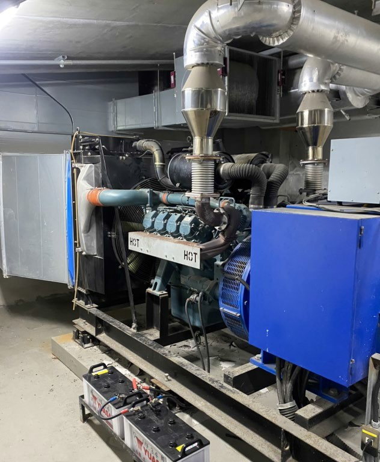
當校園網路斷線或雲端 EMS 失聯時，MGC 不得中斷微電網即時控制與安全保護功能；地端維持預設安全狀態，確保孤島運轉與保護機制絕對獨立不受上層軟體影響。
國研大樓屋頂新設 118kWp 自願性高效能 VPC 模組（年發電 172,462 kWh），海工停車場擴建 295kWp；遠期規劃 1,475~2,000kWp 風雨球場併入微網調度。
| 建築物名稱 | 建置年份 (民國) | 發電處理方式 | 建置容量 (kWp) | 微電網調度規劃 |
|---|---|---|---|---|
| 國研大樓屋頂 (自用) | 102 / 本案改建 | 自發自用 | 118.00 | 本案核心微網供電 (年發電 17.2萬度) |
| 海工館停車場 (自用) | 103 / 本案改建 | 自發自用 | 295.00 | 本案核心微網供電 |
| 國研大樓屋頂 (躉售) | 106 | 躉售台電 | 51.92 | 保留後續納入微網彈性 |
| 海工館牆面 (自用) | 99 | 自用 | 56.63 | 既有系統監測 |
| 電資大樓屋頂 | 106 | 躉售 | 111.51 | 既有躉售 |
| 社管大樓屋頂 | 108 | 躉售 | 153.72 | 既有躉售 |
| 文學院屋頂 | 106 | 躉售 | 155.76 | 既有躉售 |
| 海資館 / 藝術大樓 / 理工大樓 | 104~106 | 躉售/自用 | 212.24 | 既有系統監測 |
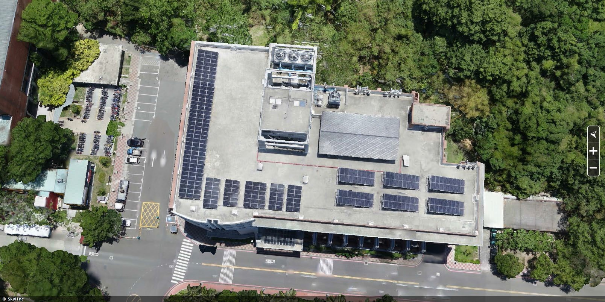
評選項目二（配分 25%）重點考核「微電網連接光電風雨球場場域介面規劃」。本案統包工程需預留雙向數位通訊與高壓配電併接點，未來可將全校高達 2,000kWp 的綠電匯入微電網，發揮全校級平滑調度效益。
雲地協同、地端優先架構：上層 EMS 負責需量預測、策略排程與視覺化；開放 RESTful API 提供校方研究團隊演算法注入（Algorithm Injection），本地資料庫同步 NAS 保障維運與研究互不干擾。
| EMS 系統分層 | 核心功能定位 | 資料傳輸與可靠度要求 |
|---|---|---|
| 雲端策略層 (Cloud) | 全校能源大數據分析、長期負載預測、需量競價策略 | 可中斷、可失聯，中斷不得影響微網運行 |
| 地端管理層 (Local EMS) | 當日調度排程、圖形化人機介面、告警派工、數據儲存 | 同步導向新設 NAS，提供校方安全唯讀介面 |
| 演算法掛入層 (API) | 標準 RESTful API，支援校方自研最佳化調度模型注入 | 學術研究與電網運維實體分流，互不干擾 |
| 現場控制層 (MGC/OT) | Modbus RTU/TCP 串接水表/光電/空調/開關，即時控制 | 指令白名單過濾，獨立執行毫秒級保護控制 |
| PCM / 監造額外檢驗要求 | 檢驗驗證內容 | 合格標準 |
|---|---|---|
| 第三方可接手性查核 | 交付完整系統架構、客製化區塊程式原始碼、API規格書 | 校方可交由指定第三方接續維運 |
| API 開放性與功能驗證 | 以 Postman 等工具實測 API 調用與現場數據一致性 | 回傳資料無延遲且數值完全吻合 |
| 資安弱點掃描 (OWASP/Nessus) | 原碼掃描、主機及 Web 弱點掃描 | Medium 以上弱點全數修補完畢 |
| 滲透測試 (Penetration Test) | 第三方資安公司實施滲透入侵測試 | 出具無重大資安漏洞合格報告 |
解決中山大學雷雨天弱電設備常態性受損痛點：委由專業技師進行全校保護電驛協調分析並更新 5 台 ABB REF-615；全面檢討避雷接地、汰換 11 台消導雷器並裝設 32 台雷擊突波吸收器。
| 工程改善項目 | 規範設備數量限制 | 改善工法與成果標準 |
|---|---|---|
| 保護電驛檢討優化 | 全校保護協調設計報告書 1 式 | 專業電力軟體（ETAP）模擬短路容量，出具全校保護協調曲線報告 |
| 保護電驛採購更新 | 指定採購 ABB REF-615 （上限購買 5 台） |
微電網專用數位式保護電驛，具備高速通訊與自適應保護協調設定 |
| 避雷針系統汰換 | 多針中和消/導雷器 （上限購買 11 台） |
評估現有避雷針妥適性，於高雷擊風險建物屋頂安裝多針消雷裝置 |
| 接地電阻量測改善 | 全校指定接地迴路 | 量測各節點接地電阻，施作降阻劑與深埋銅棒工程，達法規規定值 |
| 雷擊突波吸收器 (SPD) | 指定弱電與機電節點 （上限購買 32 台） |
於關鍵弱電配電盤裝設 Class I/II 突波吸收器，徹底杜絕感應雷害 |
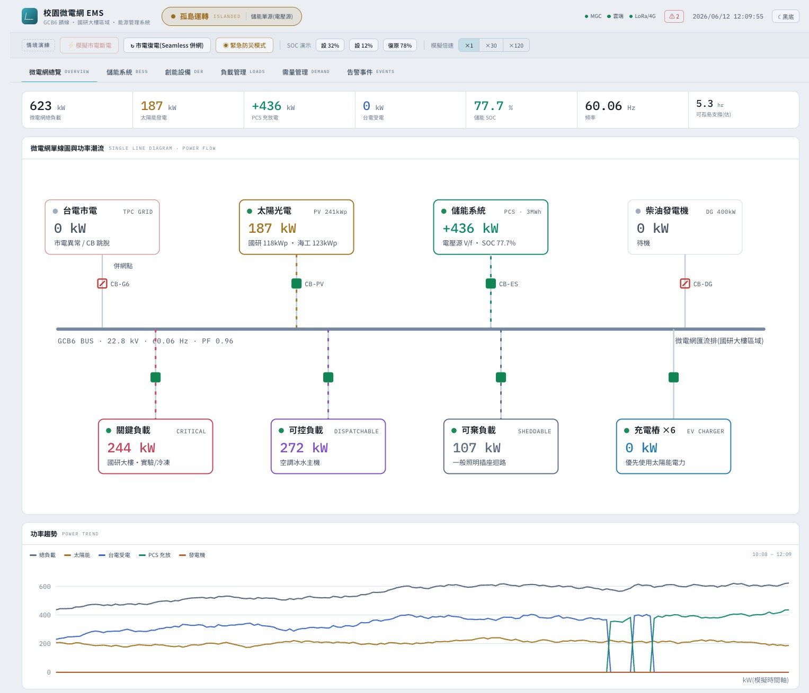
平常處於併網模式，透過淨負載門檻精準調控 PCS 充放電，實現尖峰削峰、離峰填谷、負載平滑化；並具備參與需量反應、聚合型輔助服務與全校契約容量降低 1,000 kW 之巨大經濟價值。
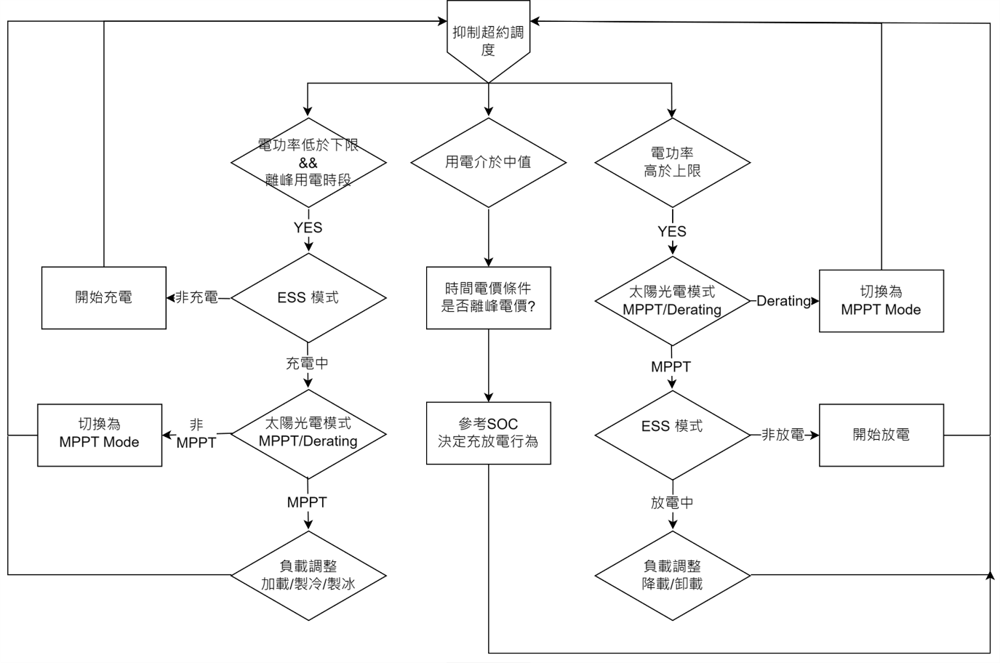
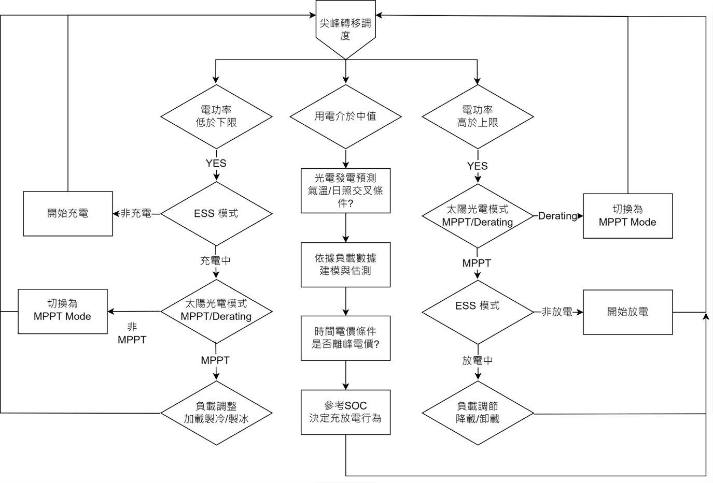
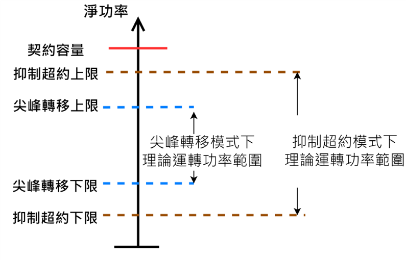
| 調度功能情境 | 觸發條件與調度邏輯 | 系統動作行為 | 經濟與電力效益 |
|---|---|---|---|
| 抑制超約調度 (Peak Shaving) | 淨負載 > 設定門檻工作點 | PCS 控制 BESS 放電補足差額；離峰低載時由市電回充 | 杜絕台電超約罰款（高達契約單價 2~3 倍） |
| 尖峰轉移 (Peak Shifting) | 正午光電尖峰 / 夜間超離峰 | 吸收光電綠電儲存；於高電價時段全力放電平滑負載 | 契約容量由 7,550kW 降至 6,550kW（-1,000kW） |
| 需量反應與輔助服務 | 台電電網告急或價格觸發 | PCS 以電流源模式併網放電，配合內部負載切離 | 參與電力交易平台聚合輔助服務（dReg/E-dReg） |
| 功因優化與主動調頻 | 局部饋線電壓波動或低功因 | PCS 毫秒注入或吸收虛功，動態改善電力品質 | 提升全校供電效率，減少輸電線損 |
市電中斷時自動轉為孤島模式：純儲能夜間支撐國研大樓 584kW 達 4 小時以上；SOC<30% 喚醒柴發雙源併行；遇外力災難更可啟動防災模式，限縮負載 ≤250kW，連續供電 48 小時以上！
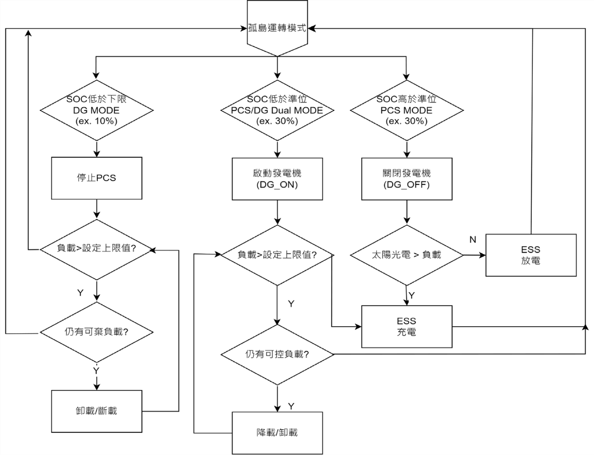
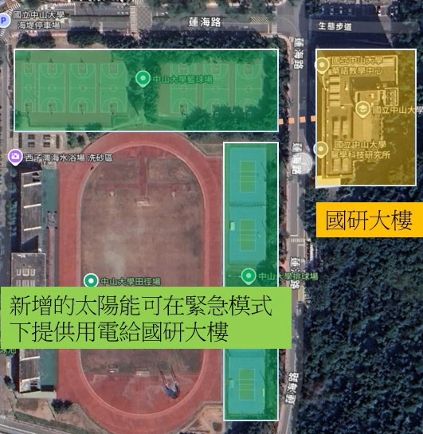
| 孤島運轉模式 | 啟動條件與電源狀態 | 負載涵蓋與運轉時間 | 技術關鍵要求 |
|---|---|---|---|
| 第 1 階：儲能單獨孤島 | 市電突發中斷，PCS 瞬轉電壓源，SOC > 30% | 國研大樓 584kW；夜間保證 ≥ 4 小時，白天日照大幅延長 | PCS 建立電網頻率與電壓，太陽能變流器無縫跟隨發電 |
| 第 2 階：雙源孤島模式 | 儲能 SOC < 30%，EMS 喚醒 400kW 柴油發電機 | 柴發以電流源輔助供電；逐步切離次要負載，延長續航 | 並聯控制盤快速投入，負載小於柴發出力時可由發電機回充儲能 |
| 第 3 階：柴發接手孤島 | 儲能 SOC < 10%，BESS 轉入保護待機 | 柴發切換為主電壓源，僅供應國研大樓最關鍵半導體實驗主機 | 全面卸載非必要設備，柴發穩定輸出防過載跳脫 |
| 防災緊急留置模式 | 地震/颱風外力重大天災，校園電網癱瘓 | 限縮負載 ≤ 250 kW，保證連續供電 ≥ 48 小時以上 | 國研大樓作留置中心，BESS(3MWh) + 屋頂光電能量平衡精算 |
市電故障與復電全過程無縫接軌：市電異常時 PCS 於 15% 畸變範圍內瞬建電網電壓；市電恢復時即時同步電壓與相位平滑併網，全過程負載與半導體設備零感知、零中斷！
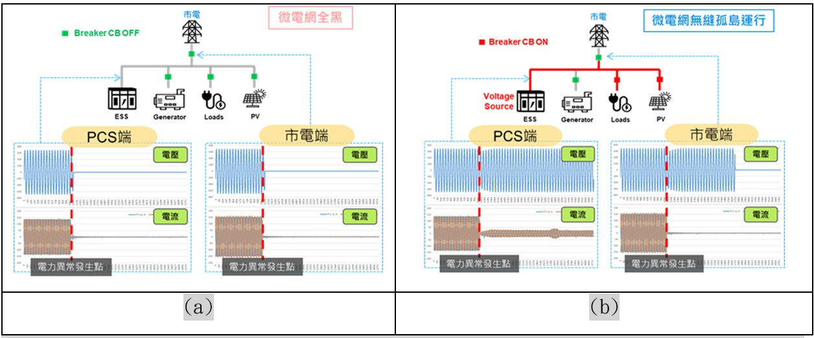
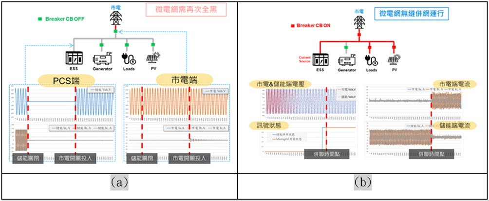
| 技術指標項目 | 傳統微電網（不具備 Seamless） | 進能服方案（具備 Seamless 無縫功能） | 半導體實驗核心價值 |
|---|---|---|---|
| 市電突發斷電情境 | 電壓迅速跌落至零，負載斷電停機 | PCS 瞬切電壓源，電壓畸變控制在 15% 範圍內 | 精密實驗儀器不停機、晶圓數據零損壞 |
| 市電復電併聯情境 | 必須先停電切開隔離，重新合閘二次斷電 | PCS 自動同步市電電壓與相位，平滑轉電流源 | 校園完全無感切換，免去二次重開機繁瑣流程 |
| 光電變流器運作 | 觸發 Anti-Islanding 防孤島跳脫中斷發電 | 微網電壓頻率恆定，智慧變流器持續全額發電 | 最大化孤島續航時間，綠電不浪費 |
微電網具備 5 大商業模式延伸空間：從自發自用綠電憑證、台電聚合式輔助服務、電動車充電營運、時間電價差套利，到極端海島型微網示範外銷樣板。
| 商業模式分項 | 實施路徑與營運機制 | 年收益 / 成本節省效益預估 | 後續推廣與擴展空間 |
|---|---|---|---|
| 1. 自發自用綠電憑證 (T-REC) | 新設光電 413kWp 申請標檢局綠電憑證 | 年發電約 55 萬度，創造 ESG 憑證價值 | 累積校內綠電比例，亦可對接企業出售憑證 |
| 2. 台電聚合輔助服務 | 3MWh 儲能參與電力交易平台聚合式服務 | 依調頻 dReg/E-dReg 規範獲取容量與電能費 | 搭配校內需量競價，放大非尖峰放電收益 |
| 3. EV 充電樁收費營運 | 設置 6 座充電樁，供校內外車輛與電巴充電 | 優先消納日間光電綠電，創造常態服務營收 | 配合未來校園接駁電動巴士專屬調度 |
| 4. 時間電價差套利 (TOU) | 利用超離峰低價充入、尖峰高價釋放 | 每日充放 1~2 次，年轉移電量逾百萬度 | 結合基本電費降低 1,000kW，節費數百萬元 |
| 5. 極端海島微網外銷樣板 | 西子灣高鹽高濕高溫環境通過 5 年實證 | 建立進能服標準化交鑰匙（Turnkey）產品線 | 複製至澎湖、金門等離島及偏遠山區微電網 |
需求說明書明訂「簡化複製工程」為核心發展指標。本案所建構之標準化變流器控制、MGC 開源介面與防火抗鹽儲能櫃設計，可大幅降低下一代校園微電網前期設計與建置成本。
嚴格依招標時程管控：決標+14天簽約與送計畫書、+40天細設審查、116年6月30日完工報竣工；驗收合格起提供 5 年全責維護保固，落實 24/72 搶修 SLA 閉環。
| 時程節點 | 法定期限要求 | 交付成果標準與罰則 |
|---|---|---|
| 契約簽署 | 決標日起 14 日曆天 內 | 簽訂統包合約，繳交履約保證金 5% |
| 工作執行計畫書 | 決標日起 14 日曆天 內 | 提送整體施工、品管、職安衛計畫送審 |
| 細部設計報告書 | 決標日起 40 日曆天 內 | 修正逾1次期間仍計入工期，不得展延 |
| 工程完工報竣 | 116 年 6 月 30 日 前 | 全部設備安裝測試完成報竣工（日曆天） |
| 全責保固維護 | 驗收合格次日起 5 年 | 全責維護，保固滿 1 年出具節能效益報告 |
| 5 年保固維運 SLA 項目 | 承諾標準 | 違約處罰條件 |
|---|---|---|
| 專屬服務窗口 | 設置 24 小時專屬受理電話窗口 | 專人全年無休受理通報 |
| 到場處理時效 | 接獲通知次日起 24 小時內派員到校 | 逾期每日計罰 2,000 元違約金 |
| 完修回復時效 | 接獲通知起 72 小時內完修回復 | 逾期每日計罰 2,000 元違約金 |
| 每年定期巡檢 | 每年至少 1 次會同校方人員全盤檢測 | 檢測完成後 10 工作日內提送報告 |
| 全責涵蓋範圍 | 一切耗材、零組件、清洗、檢測、人力全包 | 保固期內正常損壞一律免費換修 |
| 試驗類別 | 檢驗驗證項目 | 檢驗內容與交付查核文件 |
|---|---|---|
| 工廠試驗 (FAT) | 儲能系統、PCS、變壓器、比壓比流器、開關、充電樁、變流器、柴發 | 出具原廠測試報告、標檢局 VPC 認證證書、UL/IEC 國際認證合格證明。 |
| 現場試驗 (SAT) | 電能轉換器與儲能併聯/離網、柴發啟停併聯、充電樁滿載、EMS控制 | 現場會同監造實測市電斷電無縫切換、孤島保供、抑制超約及自動調頻。 |
向高階主管匯報：本案技術規格我方可完全達成，價格空間偏緊但非不可行；真正的致命殺傷力在「契約條款」，其中三項屬投標前必須用「書面釋疑」處理掉的重大風險。
| # | 最需優先確認的致命風險 | 為什麼對我方極度致命（法條出處與實務連動） | 處置時機與策略 |
|---|---|---|---|
| 1 | 損害賠償無上限 契約第19條(八)2 |
契約四個上限選項全部未勾選〔查證〕。 依民法 216 條賠償「所受損害＋所失利益」。國研大樓是工學院半導體重鎮，需求書自己寫「實驗數據毀損，損失無法計量」。若微網切換微秒偏差導致實驗跳機，求償金額恐吞掉全公司！ |
投標前釋疑期內必提 要求明訂以契約價金總額為賠償上限。 |
| 2 | 工程物價調整：無 契約第5條第1款7目 |
明載「工程物價指數調整：無」〔查證〕。 本案履約工期橫跨至 116 年 6 月 30 日（跨年度）。國際鋰電池原物料、銅線纜、鋼構在未來 9 個月若發生價格波動，全由廠商自行吸收，無任何補貼。 |
投標前報價風險準備 估算納入 5～8% 物價波動風險準備金。 |
| 3 | 預算數字前後矛盾 投標須知 vs 需求說明書 |
投標須知載 9,500 萬 vs 需求書載 9,200 萬含稅〔查證〕。 依投標須知第 50 點，廠商標價高於「公告之預算」即為不合規定廢標！若以 9,300 萬報價而機關認定上限為 9,200 萬，直接廢標出局。 |
投標前釋疑期內必提 釐清以何者為報價廢標上限。 |
盤點本案四大不可壓縮之外部法規與行政審批風險：消防署 114/11/3 儲能新制審查、台電配電級併聯審查、資安禁用陸資產品要求，以及指定單一廠牌爭議。
| 法規審批風險項目 | 觸發條件與法規出處 | 可能引發之後果 | 因應選項與評估代價 |
|---|---|---|---|
| 儲能消防新制審查 | 內政部消防署 114/11/3 修正之「提升儲能系統消防安全管理指引」，須出具火災風險評估報告〔查證〕 | 高雄市消防局審查尺度若趨嚴，退件重審將直接吃掉本已極度緊繃之工期，無法如期動工。 | 選項 A（建議）： 投標前先與高市消防局預諮詢審查要點。 選項 B： 賭得標後再辦，退件恐損失 1~2 個月工期。 |
| 台電儲能併聯審查 | 依台電「配電級併網型暨用戶內線型儲能設備併聯審查作業須知」併接高壓側 3MWh 儲能與 DREAMS 介接〔查證〕 | 台電外審期程不可控；若延宕，非可歸責於廠商但須自行舉證申請免計工期展延。 | 選項 A（建議）： 決標後立即啟動台電前置協商預審。 選項 B： 等細設審定才送件，併審恐落入關鍵路徑導致工期逾期。 |
| 資安法遵與禁用陸資 | 《資通安全管理法》、投標須知第 16 點明文禁止陸資資通訊及太陽能產品〔查證〕 | 供應鏈任一通訊模組被判定為中國製或陸資廠牌，驗收直接不通過，重大可解約沒收保證金。 | 全供應鏈非中國製聲明 ＋ 進口報單查驗；採購成本約上升 5～15%，但可根除被退件風險。 |
| 指定 ABB REF-615 爭議 | 需求說明書第 7 章明文指定電驛採用 ABB REF-615 單一廠牌〔查證〕 | 潛在未獲指定之競爭廠商可能於等標期內提出異議或申訴，導致招標程序延宕流標。 | 投標前於書面釋疑中建請機關敘明「或同等品」認定程序，預防廠商爭議影響進程。 |
消防圖審、台電併聯審查與標準檢驗局 VPC 認證皆屬外部公權力審查，其法定辦理時程無法透過廠商單方面加班趕工壓縮，是本案工期最大潛在殺手。
PCM 與校方將於竣工驗收嚴格查驗 EMS 主機、通訊 Gateway、變流器與電池管理系統（BMS）進口原產地證明，投標前必須鎖定非陸資供應鏈。
分析工程落地四大技術陷阱：Seamless 切換時間未訂量化毫秒標準、既有柴發並聯通訊相容性、舊 EMS API 不開放改建成本，以及西子灣鹽害對 5 年保固之侵蝕。
| 技術項目 | 招標規範記載內容 | 潛在工程爭議與風險評估 | 我方因應對策與建議 |
|---|---|---|---|
| Seamless 無縫驗收標準 | 需求書載「電壓在 15% 畸變範圍內重新建立」；PCM 需求書寫「均不得有停電情形」〔查證〕 | 未明訂切換時間數值標準（如 <10ms 或 <20ms）。驗收時半導體實驗室若要求達 UPS 級超高速切換，標準認定恐生爭端。 | 服務建議書主動寫明技術承諾上限（如切換時間 ≤ 20ms、電壓跌落 ≤ 15%），並列為契約附件鎖定驗收依據。 |
| 既有 400kW 柴油發電機改造 | 2015 年添購機組，增設並聯控制盤與通訊卡，實現電流源輔助供電〔查證〕 | 機齡已達 11 年，原有控制器若老舊停產或不支援數位通訊，雙源孤島模式將無法聯動。 | 投標前務必實勘柴發銘牌與盤體；報價中編列 100~150 萬元 機組控制器整體更新備援費用。 |
| 既有全校 EMS 整合不確定 | 優先整合既有 EMS，無法整合時須建置全新新能源管理系統〔查證〕 | 既有原廠若不配合釋出資料庫架構或通訊 API，統包商被迫吸收全套新建成本（預算固定）。 | 報價直接以新建全新符合規範之 EMS編列，避免寄望舊廠商而造成進度與利潤失控。 |
| 200 公尺高壓電纜路徑 | 儲能設置點距國研大樓電氣室約 200 米，路徑穿越排球場周邊〔查證〕 | 地下可能遭遇既有未明管線、景觀林木根系或柴山地質岩層，開挖許可審查與土建變更。 | 投標前現勘詳查管線圖說，規劃明挖與管中管穿線兩套備案，費用納入直接工程費。 |
| 西子灣高鹽害 5 年保固 | 海岸第一排堤邊環境，驗收合格次日起 5 年全責維護保養〔查證〕 | 鹽霧沉降率高，PCS 散熱風扇、銅排接點老化加速，24/72 SLA 違約每日罰 2,000 元。 | 報價時調高保固維運海岸係數（上浮 20~30%），儲能櫃與 PCS 採用雙道重防腐塗層。 |
工期極端緊繃且無浮時：決標後僅 40 天需提送細部設計，審查修正期間計入工期；116/6/30 為硬性竣工日，實質施工期僅約 7 個月，儲能交期 16~24 週為關鍵路徑。
| 關鍵里程碑節點 | 預定完成時程 | 工期壓力分析與關鍵路徑 (Critical Path) | 落後風險與罰則 |
|---|---|---|---|
| 決標與簽約 | 決標日 + 14 天 | 簽約並提送工作執行計畫書，同步展開各專業技師細部設計作業 | 逾期按日計罰違約金 |
| 細部設計成果報告 | 決標日 + 40 日曆天 | 契約第7條(一)1明訂：同一項目修正逾1次，修正及複審期間仍計入履約期限！實務上極易因審查來回壓縮施工期。 | 不得要求展延工期，直接吃掉施工時間 |
| 設備長料採購下單 | 細設審查通過後即刻下單 | 儲能櫃體與 PCS 交期通常長達 16～24 週（4~6個月），需長料先行或取得原廠現貨承諾。 | 設備遲到將直接導致後端試驗與報竣逾期 |
| 土建與管線施工 | 決標後第 3 ~ 6 個月 | 儲能 RC 基礎、200m 高壓管溝、消導雷接地降阻、光電棚架改建 | 遇雨天西子灣施工動線泥濘延誤 |
| 全案完工報竣 | 116 年 6 月 30 日 前 | 日曆天計算，所有日數均計入，為教育部與台電計畫之硬性結案日！扣除設計僅剩 6.5~7 個月施工試驗。 | 逾期違約金 1‰/日（每日約 9.2 萬），上限為總價 10% |
若要承接本案，必須在投標評選準備階段就把細部設計做到 7~8 成（單線圖、保護協調、儲能基礎與管溝路徑），決標後才能在 40 天內一次審定通過，為現場爭取充裕施工時間。
向財務長匯報資金曝險：驗收尾款綁台電補助款撥付時程、每期扣 5% 保留款、保證金長期凍結約 1,200 萬元，且空白標單間接費僅編 4%，利潤空間需精準精算。
| 財務曝險環節 | 契約規範條款 | 資金佔用金額估算 | 財務風險分析與對策 |
|---|---|---|---|
| 驗收尾款撥付條件 | 契約第 5 條第 1 款 4 目明載：須俟台電補助款核撥到校後，始得支付〔查證〕 | 約 1,380 ~ 1,840 萬元 （契約總價之 15~20%） |
若台電行政撥款延宕，尾款可能延遲 6～12 個月 收回且非機關違約！財務調度須備妥等額資金成本。 |
| 工程保留款扣留 | 契約第 5 條第 1 款 3 目：各期估驗款扣除 5% 保留款〔查證〕 | 累計約 460 萬元 | 初驗合格且無逾期僅能領回 50%，全部驗收合格才退還其餘 50%；施工期現金流遭實質壓縮。 |
| 各階段保證金凍結 | 押標金 5%、履約保證金 5%、保固保證金 3%（押 5 年 + 90 日）〔查證〕 | 保固保證金約 276 萬元 需長期凍結逾 5 年 |
一律爭取以銀行連帶保證書或保證保險單繳納，避免自有現金流長期凍結。 |
| 標單間接費結構限制 | 空白標單格式載：品管費 1%、工程管理+利潤+保險+空污費僅 4%〔查證〕 | 名目管理利潤僅約 360 萬 | 格式名目利潤極低；統包商實際利潤必須透過設備採購議價隱含於直接工程費中，否則單項難以反映真實管理成本。 |
專案施工高峰期（第 4~6 個月設備進場交貨），加上保留款與設備預付款，累計資金缺口峰值估計達 2,500 ~ 3,000 萬元，須向銀行申請專案工程融資額度支援。
契約第 19 條 (三) 勾選「機關取得全部權利」；但 PCM 需求書載「不含自有核心平台原始碼」。釋疑期必須釐清自研核心平台智財權保留，僅交付客製化區塊與 API，確保公司核心數位資產不受侵害。
向董事會與高階主管呈閱三種決策路徑：全面評估技術實力、合約致命曝險與策略收益，明確建言採取「選項 B：有條件投標」，透過釋疑與前置風控鎖定承攬邊界。
| 決策選項 | 決策理由與策略價值 | 必須承擔之代價與重大曝險 | 高階主管決策建言 |
|---|---|---|---|
| 選項 A 全力搶標 |
技術能力完全匹配；台電補助示範案具指標性實績；搶佔南台灣微網龍頭地位，後續有風雨球場 2MW 及其他大學複製擴充龐大商機。 | 投標階段即需投入細部設計（成本約 150~300 萬）；承擔無上限賠償 ＋ 無物調 ＋ 尾款延宕三重財務曝險；7 個月硬工期下任何外部審查退件即翻轉獲利。 | 高風險 / 高實績 不建議盲目搶標，曝險敞口過大。 |
| 選項 B 有條件投標 ★ 最佳建議方案 |
以技術優勢搶標，但以合約防護為前提！於等標期內透過書面釋疑切除無上限賠償與條款衝突；以現勘鎖定電纜與柴發成本；鎖定台達電交期。 | 釋疑與現勘將消耗 2~3 週密集準備時間；釋疑公開可能提示競爭對手；若機關釋疑回覆不願設賠償上限，則立即啟動煞車轉為選項 C。 | 優先推進路線 守住底線前提下全力爭取決標。 |
| 選項 C 不建議投標 |
無上限損害賠償 × 半導體實驗場域 × 116/6/30 硬工期 × 無物調，五重疊加風險超載；單一跳電意外事故之賠償可能數倍於本案全部利潤。 | 放棄台電微電網指標案實績與後續全校擴充機會；競爭對手取得後將在未來大學微網標案形成領先地位。 | 保全資本底線 若釋疑未獲善意回應時之必然退路。 |
若機關書面釋疑回覆： 同意明訂賠償上限為契約總額、釐清預算以 9,500 萬或 9,200 萬為準、界定風雨球場僅留通訊介面 → 全力啟動投標（執行選項 B）。
若機關回覆： 堅持賠償無上限、且預算壓死在 9,200 萬 → 轉為選項 C 放棄，或大幅上調 15% 風險準備金報價。
技術可行性：4.8 分（我方完全勝任）
商務條款合規：2.2 分（殺傷力大，需釋疑）
財務資金獲利率：3.1 分（間接費緊繃，需專案融資）
示範與戰略價值：4.9 分（全台微網指標首選）
落實選項 B 之具體行動清單：於投標日前必須完成 5 大前置風險閉環查核，由業務、設計、採購與法務分工並行，全數亮綠燈方得正式送件。
| 門檻 | 前置查核任務名稱 | 查核標準與交付具體要求 | 負責單位 | 時程死線 |
|---|---|---|---|---|
| 1 | 提出書面釋疑函件 | 預算上限確認、損害賠償上限設防、智財權原始碼邊界、風雨球場界面、電驛上限衝突等 5 大題提送校方。 | 業務部 / 法務室 | 等標期 1/4 內 |
| 2 | 強制實地現勘與測量 | 招標文件強制要求；確認 200m 高壓電纜管溝路徑、儲能場址地質與消防間距、400kW 柴發控制介面、既有 EMS API。 | 設計部 / 機電技師 | 投標前 10 天 |
| 3 | 高市消防局預諮詢 | 向高雄市消防局預先諮詢 3MWh 櫃式儲能「提升儲能系統消防安全管理指引」火災風險評估審查標準與細水霧細節。 | 消防設備師 / 設計部 | 投標前 7 天 |
| 4 | 儲能設備商價格交期綁定 | 取得台達電（已有 6/16 報價基礎）或一線大廠含交期承諾之固定價格報價單，確保 116 年 2 月前可交貨。 | 採購部 / 設備商 | 投標前 5 天 |
| 5 | 報價風險準備金精算 | 成本分析表內建置 5～8% 物價風險準備金及海岸高鹽害 5 年保固加乘係數，完成底價試算。 | 成本估算組 / 財務部 | 投標前 3 天 |
本案履約期跨 9 個月且儲能不得分包，牽動公司事業經營、財務現金流與法務授權。依 RACI 矩陣明確劃分經營高層向上決策層級與專案執行團隊分工。
| 往上向上牽動（高階決策層） | 核心牽動事項與決策層級 |
|---|---|
| 2.2 事業經營處 | 儲能不得分包，未來 9 個月需鎖定主要工程與電力技師人力，需董事會層級專案優先序核定。 |
| 3.5 財務部 | 押標金 460 萬 + 履約保證金 460 萬 + 保留款 460 萬 + 尾款延後 6~12 個月，需預留約 3,000 萬流動性信用額度。 |
| 3.8 法務室 | 損害賠償無上限與智財權全歸機關條款，需出具正式法律風險意見書，作為投標底線依據。 |
| 1.3 策略合作夥伴 | 與台達電之合作由專案採購升級為策略夥伴層級協議，鎖定交期違約背對背（Back-to-Back）條款。 |
| 往下推動執行（專案小組） | 具體執行任務與權責分工 |
|---|---|
| 4.1 業務開發部 | 提送釋疑函件、實地勘查安排；嚴守採購法第 71 點利益衝突條款（與 PCM 廠商保持距離）。 |
| 4.2 設計規劃組 | 投標階段設計搶跑（做到 8 成）：單線圖、保護協調初稿、儲能基礎配置、200m 電纜路徑三方案。 |
| 4.3 資材採購組 | 取得台達電含交期承諾報價單、確認 ABB REF-615 供貨管道、全供應鏈非中國製產地聲明備查。 |
| 4.6 運維管理處 | 建立高雄在地 24/72 SLA 維運能量，精算 5 年高鹽害保固成本並配置備品庫存。 |
4.2 設計規劃組於本案投標階段所產出之 3MWh 儲能基礎詳圖、西子灣抗鹽塗裝規範、MGC 安全邊界邏輯與單線拓撲，即使本案未得標，亦可100% 轉化為公司「8.3 微網工程」之標準化模組資產，持續複利運用於後續其他大學及工業微電網標案。
於等標期四分之一內必須以書面正式向中山大學提送之五大釋疑題目：逐條引述招標文件依據、擬定我方主張文案，並預設機關可能回覆與談判退讓底線。
| 題號 | 釋疑主題 | 引述招標文件衝突之處 | 我方主張建議修訂文字 | 我方談判退讓底線 |
|---|---|---|---|---|
| 1 | 預算上限確認 | 投標須知第 9 點載預算 9,500 萬；但需求書第 4 章載 9,200 萬含稅。依須知第 50 點高於預算廢標。 | 建請機關函覆本案公告之報價廢標上限金額究為 9,200 萬元或 9,500 萬元。 | 若確認為 9,200 萬，報價不得逾 9,200 萬。 |
| 2 | 損害賠償上限 | 契約第 19 條 (八) 2 四個賠償上限選項全未勾選；國研實驗室損失無法計量。 | 建請依工程會統包契約範本，增訂「損害賠償總額以契約價金總額為上限」。 | 若堅持不設上限，轉選項 C 放棄或上浮保險。 |
| 3 | 智財權核心源碼 | 契約第 19 條 (三) 勾選機關取得全部權利；PCM 需求書載不含廠商自有核心平台原始碼。 | 建請澄清僅客製化區塊與 API 屬機關，廠商原有 EMS 核心底層原始碼保留智財權。 | 必須確保原有 EMS 不被整包收歸國有。 |
| 4 | 風雨球場介面 | 評選項目二含風雨球場介面規劃，需求書第 7 章提 1475~2000kWp 租用光電系統。 | 建請澄清該風雨球場光電工程非本案施工範圍，本案僅負責預留數位通訊併接介面。 | 防範被要求全包風雨球場施工。 |
| 5 | 保護電驛數量上限 | 需求書寫 ABB REF-615 上限購買 5 台；但契約第 4 條又寫統包必須工程不得加價。 | 建請確認全校保護協調若超出 5 台，超出部分由機關另案採購或辦理契約變更。 | 上限必須鎖定為 5 台，超出不吸收。 |
等標期若為 20 日曆天，必須在招標公告日起 5 日曆天內以書面正式遞交中山大學。釋疑公文提送越早，機關召開審查會修正招標公告之機會越大，對我方最有利。